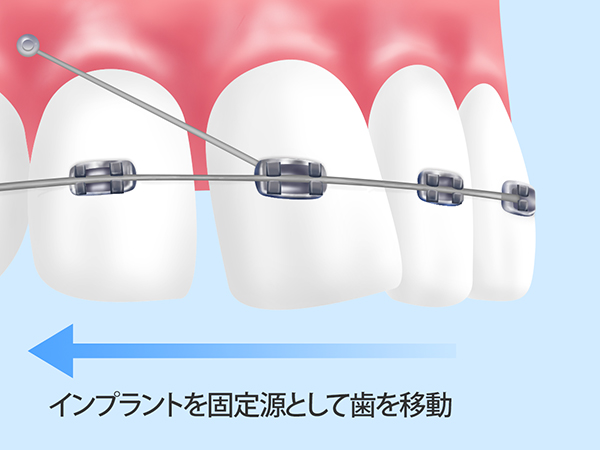

矯正歯科・小児矯正
- TOP
- 矯正歯科・小児矯正
「前が出ている」「受け口が気になる」「歯と歯の間にすき間がある」など、歯並びでお悩みの方は少なくありません。歯並び・咬み合わせの乱れは、見た目が気になるだけでなくお口や全身の健康にも悪影響を及ぼします。
兵庫県赤穂市の歯医者「あきた歯科」の矯正歯科では、歯並び・咬み合わせを改善する矯正治療を行っています。歯並び・咬み合わせを整え、美しい口元や健康を手に入れましょう。
歯並びが悪いとさまざまな悪影響が生まれます
「歯並びが悪い」＝「見た目の問題」と思われている方も多いのではないでしょうか。しかし実際の問題はそれだけではありません。お口や体、そして心にも悪影響を及ぼすことがあるのです。なお歯並びの乱れのおもな問題は、以下の通りです。
中でも「心へ影響」は注意したい問題でしょう。口元が気になって人前で笑えなくなってしまったり、劣等感を覚えて人と積極的に関われなくなってしまったりするケースも珍しくありません。
歯並び・咬み合わせを美しくする矯正治療は、自信を持って前向きに生きていくためにも大切な治療だといえます。
矯正治療が必要な歯並び
| すきっ歯 空隙歯列 （くうげきしれつ） |
交叉咬合 （こうさこうごう） |
八重歯、乱ぐい歯、 叢生（そうせい） |
過蓋咬合 （かがいこうごう） |
|||
|---|---|---|---|---|---|---|
|
歯と歯の間にすき間がある歯並びです。歯の大きさに対して顎が小さい、逆に顎の大きさに対して歯が大きい場合などに起こります。 |
交叉咬合 （こうさこうごう） |
奥歯が上下逆になっている咬み合わせです。顎自体がずれている場合や、歯の生え方がずれている場合があります。 |
八重歯、乱ぐい歯、 叢生（そうせい） |
歯がきれいに並ばず、デコボコに並んでいる状態です。ブラッシングしづらく汚れが残りやすくなり、虫歯・歯周病リスクが高まります。 |
過蓋咬合 （かがいこうごう） |
上顎が下顎を深く覆っている歯並びです。咬み合わせが深く、食べ物を咀嚼しにくくなります。 |
| 受け口 反対咬合 （はんたいこうごう） |
開咬 （かいこう） |
出っ歯 上顎前突 （じょうがくぜんとつ） |
上下顎前突 (じょうげがくぜんとつ) |
|||
|
上の歯列より下の歯列が前に出ている歯並びです。 |
開咬 （かいこう） |
奥歯を咬み合わせても、上下の前歯が閉じない状態です。空気が漏れやすく、発音が不明瞭になることがあります。 |
出っ歯 上顎前突 （じょうがくぜんとつ） |
上の前歯が出ていたり、下の歯列よりも上の歯列が前に出ていたりする歯並びです。 |
上下顎前突 （じょうげがくぜんとつ） |
上下の歯列が、ともに前に突き出している歯並びです。転倒したときなどに唇を切りやすくなります。 |
あきた歯科の矯正治療
Wire straightening ワイヤー矯正
| メタルブラケット | クリアブラケット | セラミックブラケット | ||
|---|---|---|---|---|
|
金属製の装置とワイヤーを用いる、もっとも一般的な矯正治療法です。比較的費用を抑えられる上に多くの症例に適応し、よい効果を期待できます。ただし、装置が目立ちやすい点がデメリットです。 |
クリアブラケット |
メタルブラケットと同様のしくみで、ブラケットに透明なプラスチック製のものを使用したものです。効果は変わらず、目立ちにくいというメリットを得られます。 |
セラミックブラケット |
こちらもメタルブラケットと同じしくみで、セラミック製のブラケットを用いるものです。セラミックは歯の色に合わせて選べるため、目立ちにくくなります。 |
Clear aligner (Asaligner) 目立ちにくい矯正「クリアアライナー（アソアライナー）」
固定式のブラケットやワイヤーではなく、透明なマウスピース型の装置を使う方法です。歯の動きに合わせてマウスピースを取り替えながら、歯を動かしていきます。
目立たないため、矯正治療をしていることを他人に気づかれにくいのがメリットです。また取り外せるため、食事やブラッシングに支障がありません。
～インプラント矯正とは？～

インプラント矯正とは、矯正用の小さなインプラントを顎の骨に埋め、それを固定源にして歯並びを改善する治療法です。固定源が安定しているため、治療期間を短縮できる上によりよい効果を得やすいのが特徴です。
インプラント矯正は比較的新しい治療法であり、手術も必要です。そのためまだ導入している医院は多くありません。当院ではいち早くインプラント矯正を取り入れ、実績を重ねてきましたので安心してお任せください。
| メリット | デメリット |
|---|---|
|
|
Implant correction flow インプラント矯正の流れ
| STEP01 術前検査 |
STEP02 インプラント埋入手術 |
STEP03 ワイヤーよる歯の移動 |
|---|---|---|
| 矯正治療にあたり必要な検査を行い、虫歯・歯周病がある場合には先にそちらの治療を行います。なおお口の状態によっては、抜歯が必要になる場合もあります。 | 矯正用インプラントを顎の骨に埋め込む手術を行います。時間は1本につき1分程度です。 | 埋め込んだインプラントを固定源にし、ワイヤーを使って歯を動かしていきます。治療期間中はワイヤーを調整するため、3週間に1度のペースで通院が必要です。お口の状態によって異なりますが、通常の方法の半分程度の期間で治療を終えられます。 |
load banner ở đây
Pediatric correction メリットの多い子どもの矯正～小児矯正～
矯正治療は年齢に関係なく、大人の方でも受けられます。しかし成長期にある子どものうちに矯正治療を受けると、多くのメリットを得られることをご存じですか？
兵庫県赤穂市の歯医者「あきた歯科」では小児矯正を行っており、お子様がきれいで正しい歯並び・咬み合わせを手に入れられるようお手伝いしています。お子様の歯並びに気になることがありましたら、お気軽に当院までご相談ください。
子どもの矯正を始めるタイミング
子どもの矯正では自然な成長の力を利用するため、始めるタイミングが重要になります。しかしお子様の成長のスピードには個人差がありますので、一概に「○歳から始めるのがいい」とはいえません。ただし、目安としてご提示できるのは「6歳ごろ」です。
このころは乳歯から永久歯へと生え替わっていきながら、顎も大きく成長する時期。骨格のバランスを整えるのに適しています。ただし、歯並びによってはこのタイミングにかぎりません。受け口や開咬（かいこう）などの場合には、もう少し早く治療を開始するケースもあります。
いずれにしろ、生え替わりのスピードや顎の成長には個人差があります。定期検診などで経過を見ていきながら、矯正治療開始に適したタイミングを見逃さないようにしましょう。
子どものクセについて
子どもの何気ない日常のクセが、歯並び・咬み合わせを乱す原因になることがあります。以下のようなクセがある場合には、できるだけ早く直してあげましょう。
| 頬杖 | 爪を咬む | 指しゃぶり | 唇を咬む | |||
|---|---|---|---|---|---|---|
|
顎の関節に頭の重さがかかり、歯並びや顎の発育に悪影響を与えることがあります。 |
爪を咬む |
硬い物を咬み続け、歯や歯ぐきに負担をかけます。 |
指しゃぶり |
前歯を裏側から押している状態になり、出っ歯の原因になることがあります。 |
唇を咬む |
下唇を咬むと出っ歯に、上唇を咬むと受け口になるリスクがあります。 |
| タオルを咬む | 舌癖（ぜつへき） | 口呼吸 | 丸飲み | |||
|---|---|---|---|---|---|---|
|
上下の歯を常に動かすことで、咬み合わせを乱したり出っ歯になったりします。 |
舌癖（ぜつへき） |
舌で前歯を押したり、舌を口の前に突き出したりするようなクセがあると、歯並びや発音に悪影響を及ぼすことがあります。 |
口呼吸 |
舌の位置が下がり、歯並びを乱すことがあります。またお口の中が乾燥しやすくなり、自浄作用がある唾液量が減って細菌が増え、虫歯リスクも高まります。 |
丸飲み |
あまり咬まずに飲み込む習慣があると、歯や顎関節が正しく発育しないことがあります。 |
小児矯正の第１期・第2期
歯列矯正の中でも、子どもが行う治療を「小児矯正」といいます。小児矯正は、第1期治療と第2期治療に分けられ、目的や治療内容はそれぞれ異なります。
| 小児矯正における第1期治療 | 小児矯正における第2期治療 | |
|---|---|---|
|
乳歯と永久歯が混在している時期に、自然な成長の力を利用して行う矯正治療です。取り外せる装置を毎日就寝中などに一定時間装着し、顎の大きさや形が正しく育つよう誘導。永久歯がきれいに並ぶ土台をつくります。 顎の成長が完了してからの治療よりも、よい効果を得やすくなります。また、後に本格的な矯正に移行した際に抜歯する確率を減らせるメリットも。治療開始の目安は5～7歳ころです。 |
小児矯正における第2期治療 |
すべての永久歯が生えそろってから行う矯正治療です。成長が完了しているため、顎と歯の不調和が明確になり、治療の見通しを立てやすくなります。 基本的に、もっとも一般的な「ブラケット」とワイヤーを使用した矯正治療（Link xuống dưới）を行います。治療開始の目安は12歳ころです。 |
当院の小児矯正歯科メニュー
| 床矯正 | ムーシールド | 急速拡大装置 |
|---|---|---|
|
取り外せる装置を毎日一定時間装着し、成長発育の妨げになったり、歯ぐきを傷つけたりするような歯並び・咬み合わせの乱れを改善する治療です。数本の歯に絞って移動させ、同時に顎の正しい成長を促し、その後永久歯がきれいに並ぶ土台をつくります。 多くの場合、この治療の後でブラケットを用いる一般的な矯正治療に移行します。 |
マウスピース型の装置を使って、受け口（反対咬合）を改善する治療です。マウスピースはおもに就寝中に装着し、舌やお口まわりの筋肉の状態を整え、受け口の改善を図ります。 治療は3歳から可能であり、とくに乳歯列期に行うことで顎の骨の正しい成長を促せます。 |
「機能的矯正装置」とも呼ばれる装置を用い、舌やお口まわりの筋肉をコントロールし、顎が正しく成長するよう導く治療です。永久歯がきちんと並ぶよう顎の正しい成長を導き、後に歯を並べる治療を行います。 先にこの治療をしておくことで、後の矯正治療で抜歯せずにすんだり、前歯の傾斜の状態を整えたりすることができます。 |
| マルチブラケット | プレオルソ |
|---|---|
|
もっとも一般的な矯正治療法といえる、1本1本の歯に小さな装置「ブラケット」を装着し、それにワイヤーを通して歯を正しい位置に動かしていく治療法です。 ほぼすべての症例に適応でき、よい効果を得られる点がメリットです。逆に装置が目立つというデメリットもありますが、近年では目立ちにくいブラケットもお選びいただけます。 |
取り外しができるマウスピース型の装置を用いて、出っ歯や受け口、でこぼこな歯並びなどを改善する治療法です。装置はやわらかいためお子様にも装着しやすく、また取り外し可能なので、食事やブラッシングもいつも通り行えます。 顎の骨がまだやわらかい、6～10歳ころのお子様に適した治療法です。 |